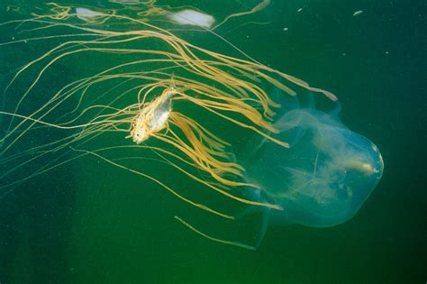

Hydrozoa
Find out more about the Hydrozoans here

There are more than 2000 known species of jellyfish, however some scientists believe that there could be as many as 300,000 species of jellyfish who remain yet undiscovered. Of the 2000 known species of jellyfish only about 70 of them known to be harmly or deadly to humans. Of these species that are harmful to humans the Box Jellyfish of which chiefly occupies the class of Cubozoa is the most dangerous, and can be fatal to humans. There are, as of 2018, 51 known species of Box Jellyfish.
Jellyfish stings are commonplace around the world with an estimated 150 million jellyfish stings occuring around the world every year.
Classes of Subphylum Meduzosa:
Meduzosa includes the classes: Hydrozoa, Scyphozoa (True Jellyfish), Staurozoa, and Cubozoa. Members of Meduzosa are distinguished from the other members of Phylum Cnidaria by a life cycle called the Medusa stage; This medusa stage is when a jellyfish is in its most recognizable and iconic form.
Greater information about the life stages of jellyfish can be found here.
Scyphozoa:
A class of exclusively marine jellyfish; There are no members of this class that live in fresh water. Members of this family are refered to as "True Jellyfish". The class name Scyphozoa is greek and likens the dome shapes of the members of this class of Meduzosa to drinking cups.
Below an image of a Scyphozoan jellyfish called the "Cauliflour Jellyfish"
These are also known as Box Jellyfish because of their bells that look like boxes. There are some varieties of Cubozoan Jellyfish which are highly venomous. These species have a well developed nervous system compared to other species of Jellyfish.these have complex retina and eyes. The cubozoa Jellyfish engage themselves in very elaborate courtship behavior. Below a species of Box Jelly catches a fish
There is one extant order in Staurozoa: "Stauromedusae" also known as the stalked jellyfishes. This class of Jellyfish do not float in water but remained attached to seaweed or rocks throughout their life. They are usually found in cold water and are shaped like a trumpet. They display the utmost beauty and camouflaging techniques.
Staurozoa is a class of Medusozoa, jellyfishes and hydrozoans. It has one extant order: Stauromedusae (stalked jellyfishes). A fossil group called Conulariida has been proposed as a second order, although this is highly speculative. The extinct order is largely unknown and described as a possibly cnidarian clade of marine life with shell-like structures, the Conulariida. Staurozoans are small animals (1–4 cm or 0.4–1.6 in) that live in marine environments, usually attached to seaweeds, rocks, or gravel. They have a large antitropical distribution, a majority found in boreal or polar, near-shore, and shallow waters. Few staurozoans are found in warmer tropical and subtropical water environments of the Atlantic, Indian, and Pacific Ocean basins, but most are known from the Northern Hemisphere. Over the years their number of species has increased, thus right now it is said to have an estimated 50 species.
information about polypodiozoa